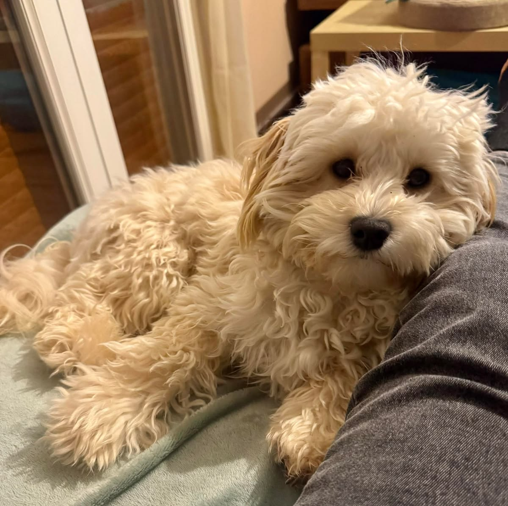
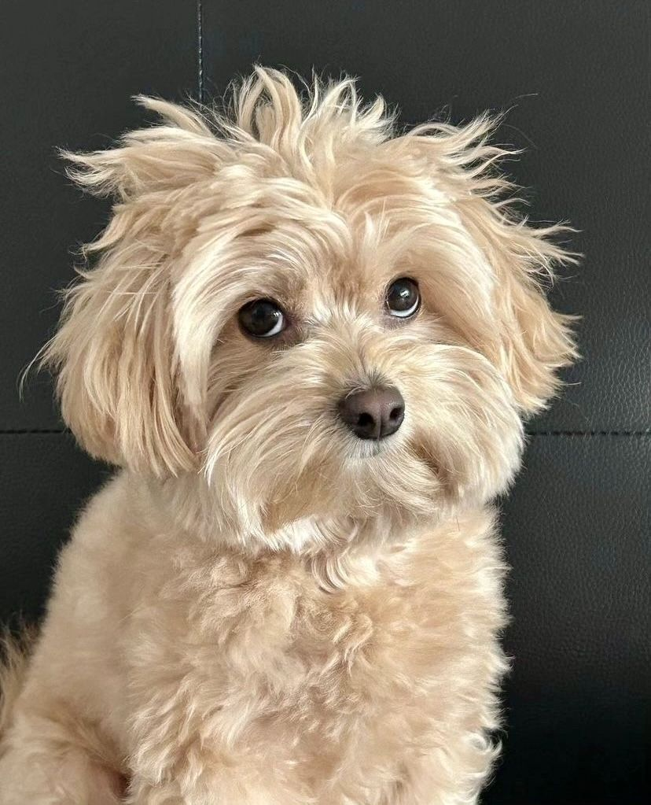
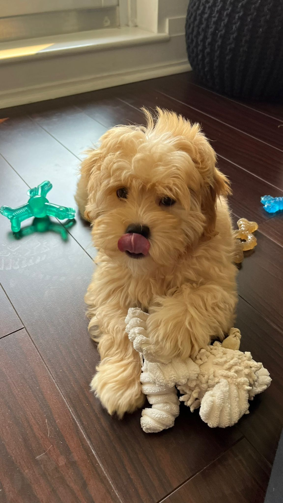
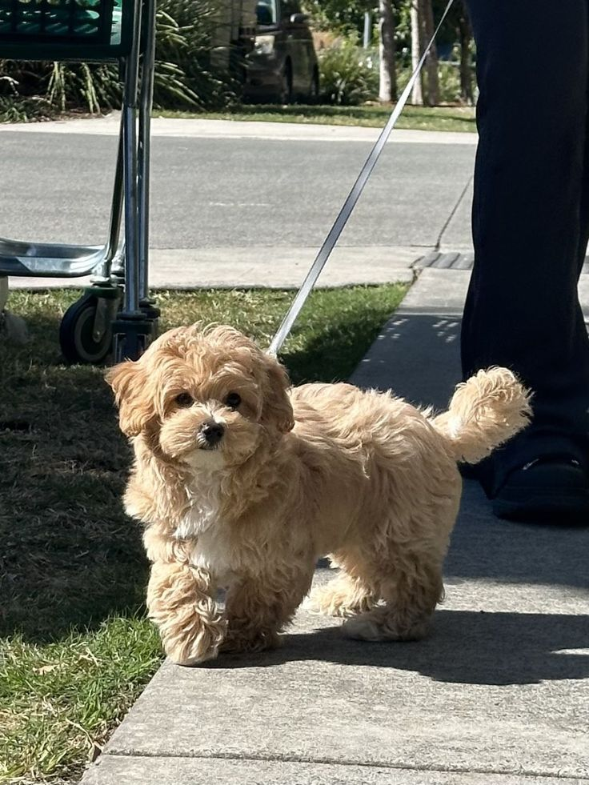

Volver al catálogo
Disponible

Conoce a tu próximo compañero
Canela
Perrita mestiza · 8 meses · Tamaño pequeño · Heredia




La historia de Canela
Canela es una perrita pequeña que espera una segunda oportunidad. En esta descripción de ejemplo la imaginamos alegre, curiosa y con mucha energía para aprender y jugar con su futura familia.
Esta descripción contiene datos de ejemplo para el prototipo académico de PetMatch CR.
Características
EspeciePerro
RazaMestiza
Edad8 meses
TamañoPequeño
UbicaciónHeredia
EstadoDisponible